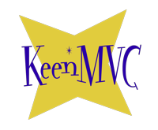

|  |
KeenMVC
0.1
A PHP MVC framework done right
|
Keen was born from my search for an MVC framework with all the good bits. What are the good bits you say? Here's my take (YMMV):
The last two were the key.
I don't know of anyone who was born a programmer. We all started somewhere. And yet, a very high percentage of the tools designed for programmers are not friendly to newbies. For example, I actually feel that Ruby would be somewhat easier than PHP to pick up. (There's even a Ruby framework called Pakyow with the "good bits".) Unfortunately, I haven't been able to find a server application in the Ruby world that's as easy to work with as XAMPP.
And then views. I wanted to be able to take an unmodified HTML file and plug it in. No templating languages. No inserting bits of code. A view is just a view. To me, a framework that lacks this is not really an MVC framework. Pakyow is the only framework I'm aware of that does this.
All that said, I felt like it would be easier for me to create a framework for PHP (where I know there's a need for such a thing), than to create a desktop server app for Ruby. Enter KeenMVC.
Ideally, when installing KeenMVC for a site that you're building, the public folder in the distribution should be made the webroot. If that's not possible — you have to install into a certain directory, for example — there is an .htaccess file at the root level of the distribution that will help things work properly when using a properly configured Apache server installation.